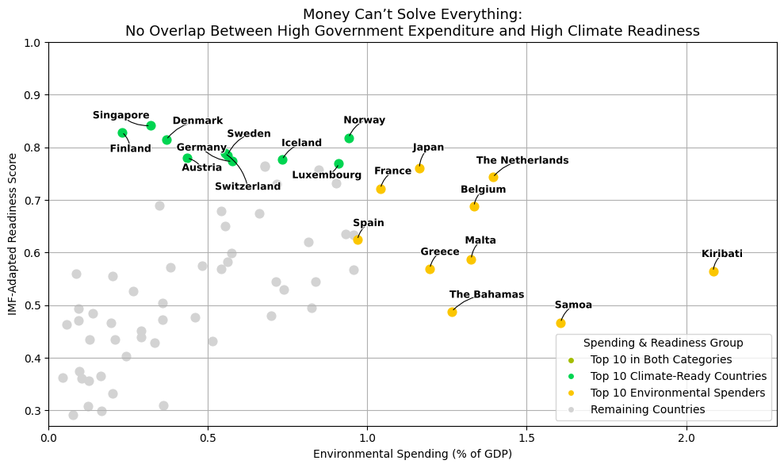
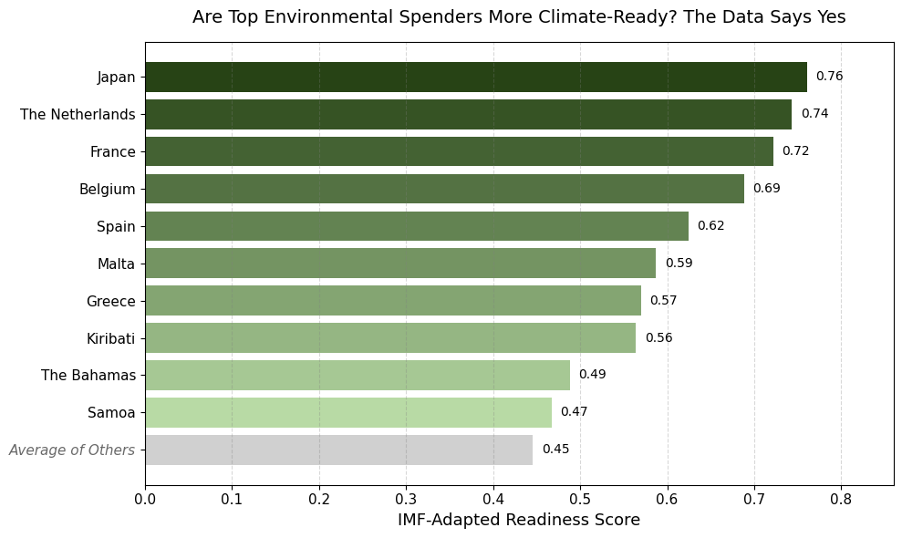

Proposition: More environmental spending by a country's government does not guarantee high climate readiness.
FOR the Proposition

Design Decisions and Rationale:
- +1.5 — I merged two datasets, the “IMF-Adapted ND-GAIN Readiness Index” and “Government Environmental Spending,” using ISO3 country codes to explore the relationship between financial expenditure and climate readiness. I filtered the data to only include 2021 since it had the fewest nulls and was the most recent and relevant year. Missing values were dropped on the assumption of MCAR (Missing Completely at Random), as they were likely not collected or computed rather than intentionally omitted.
- +1.5 — I created four categorical groups: the top 10 countries by climate readiness, the top 10 by environmental spending, the countries that belonged to both, and those that fell into neither. Initially, I considered plotting all countries, but I found the patterns were consistent and focusing on the top 10 enhanced clarity. While it’s possible that using the top 15 or 20 might have shown more overlap, limiting to 10 improved legibility and allowed the argument to be more focused.
- +0.5 — I used the IMF-Adapted Readiness Score rather than more direct environmental metrics like carbon emissions, since it's a globally recognized composite index for climate preparedness. However, its lack of units and complex derivation could reduce interpretability for some readers.
- -1.0 — I selectively emphasized only the top 10 countries with bold labels and arrows, intentionally drawing attention to their lack of overlap. This deemphasized the remaining countries, which actually show a mild correlation, as many lie along a diagonal trend. Omitting further annotation for them arguably presents a skewed interpretation.
- -1.0 — I used OKLCH color space instead of RGB to ensure consistent perceived brightness across categories. While the intent was to give all groups equal visual weight, using uniform chroma and lightness can still subtly steer visual emphasis.
AGAINST the Proposition

Design Decisions and Rationale:
- +1.5 — I again merged the “IMF-Adapted ND-GAIN Readiness Index” and “Government Environmental Spending” datasets via ISO3 codes. I restricted the dataset to the year 2021 for consistency and reliability, and dropped missing values assumed to be MCAR. This clean combination allowed me to construct a focused comparative visualization across countries.
- -1.0 — I applied a light-to-dark OKLCH green gradient to highlight differences in climate readiness across the top 10 spenders. While these differences were not always large, the gradient was chosen to visually amplify distinctions and associate “green” with ecological success.
- -1.0 — I styled the “Average of Others” bar using subtle visual cues: desaturated gray coloring and an italicized label. These design choices didn't hide the average but deliberately softened its rhetorical impact, making the top 10 seem more dominant by contrast.
- -1.5 — Though I did not exclude any data, I used the group mean of non-top-spenders to create a single “Average of Others” bar. This aggregation reduced the visibility of individual variation and strategically exaggerated the gap between the top 10 and the global average. The simplification made the top performers look significantly stronger than they might if compared against a fuller distribution.
- -2.0 — The title confidently states that the top 10 spenders are more climate-ready, relying on a selective comparison against a pooled average. While not technically incorrect, this framing withholds context and creates a misleadingly definitive narrative by omitting the rest of the distribution.
Final Reflection
This project challenged me to critically examine how data from different sources can be integrated meaningfully. At first, I struggled to find overlapping keys across datasets, but once I discovered that ISO3 codes aligned environmental spending with climate readiness, it unlocked a compelling intersection. Coming from a third-world country and now studying in a first-world context, I’ve been exposed to both sides of the narrative: the idea that only wealthy countries can afford to prioritize the environment, versus the argument that climate readiness doesn't always require financial abundance. I was curious to what the data supported and this led me to pursue this exploration. Those were conscious choices—and I now know to look for them in others’ work too. I’m especially wary now of charts that use summary statistics without showing the full picture.
One of my biggest learnings was that choosing between data visualization practices isn’t just about aesthetics or best practices—it’s a strategic decision that dramatically alters persuasion. With the bar chart, I realized how easy it was to hide variability by using group averages or curated subsets. The scatterplot, while more data-rich, allowed me to amplify specific points via annotation, but also showed how even placement and label nudges can shape perception. This experience made it clear how important ethical analysis is—especially since even small design decisions can reinforce a message, or distort one.
I think ethical visualization isn’t just about avoiding deceptive transformations or excluding data. There’s no neutral visualization—just choices that either respect or obscure nuance. For me, the line between persuasive and misleading often lies in who’s being left out or what gets flattened. As a reader, I’m now more attuned to omission. As a data scientist, I am now aware that data is rarely ever objective and intention plays a significant role.